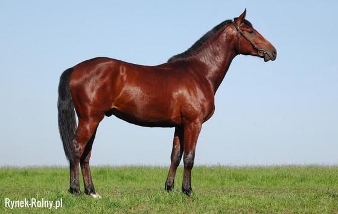
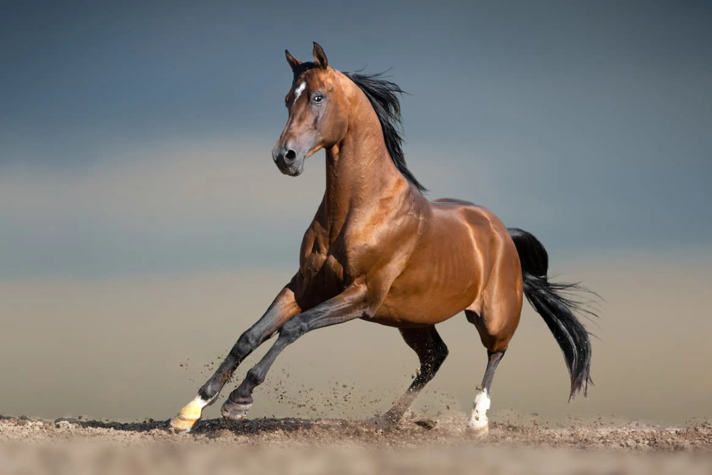
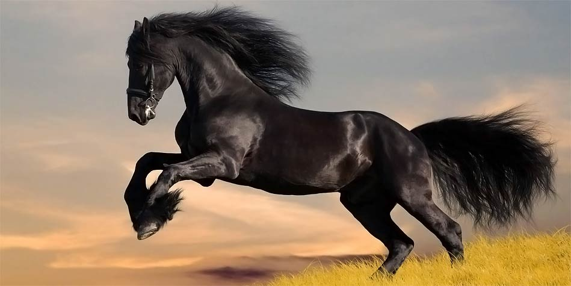
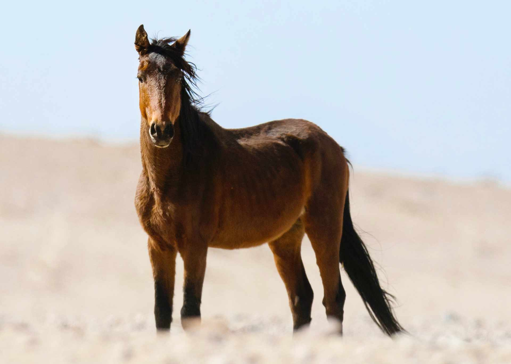
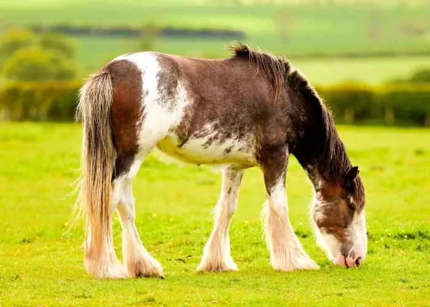
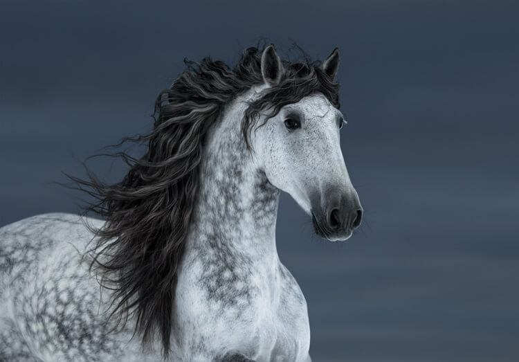

Konie od wieków towarzyszą człowiekowi, pełniąc różnorodne role od wiernych towarzyszy w pracy, przez bohaterów bitew,
aż po uczestników sportowych zmagań. Ich elegancja, siła i wierność budzą podziw i fascynację.
W Polsce, gdzie tradycja jeździecka ma głębokie korzenie, konie były nie tylko narzędziem pracy, ale także symbolem kultury i historii.
Dziś, choć ich rola w codziennym życiu uległa zmianie, wciąż pozostają nieodłącznym elementem naszej tożsamości.
Na tej stronie przyjrzymy się bliżej tym niezwykłym zwierzętom - ich historii, rasom, zmysłom, sposobom komunikacji oraz współczesnemu znaczeniu.



„Żadna chwila nie została zmarnowana, jeśli spędziło się ją w siodle.”
- Winston Churchill
Każdy koń ma niepowtarzalny układ włosków na pysku, podobnie jak ludzie mają unikalne odciski palców.


